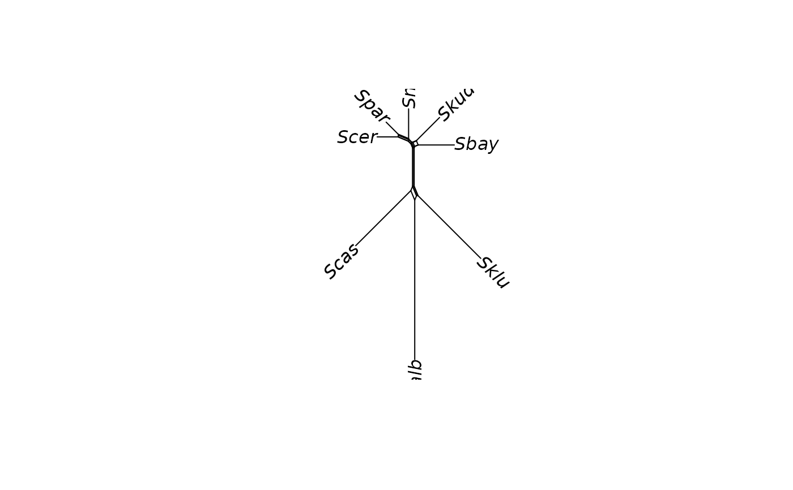

cophenetic.networx computes the pairwise distances between the pairs
of tips from a phylogenetic network using its branch lengths.
Usage
# S3 method for class 'networx'
cophenetic(x)Value
an object of class dist, names are set according to the tip
labels (as given by the element tip.label of the argument x).
See also
cophenetic for the generic function,
neighborNet to construct a network from a distance matrix
Examples
example(neighborNet)
#>
#> nghbrN> data(yeast)
#>
#> nghbrN> dm <- dist.ml(yeast)
#>
#> nghbrN> nnet <- neighborNet(dm)
#>
#> nghbrN> plot(nnet)

cophenetic(nnet)
#> Sbay Skud Smik Spar Scer Scas
#> Skud 0.15679569
#> Smik 0.17138720 0.15382927
#> Spar 0.16838347 0.15082553 0.12360062
#> Scer 0.17717456 0.16108716 0.13763679 0.08678458
#> Scas 0.34958331 0.35210510 0.34479766 0.34179392 0.34350386
#> Calb 0.54518366 0.54770545 0.54039800 0.53739427 0.53910421 0.52768392
#> Sklu 0.38096004 0.38397653 0.38238343 0.37937970 0.38167995 0.39014046
#> Calb
#> Skud
#> Smik
#> Spar
#> Scer
#> Scas
#> Calb
#> Sklu 0.54213286